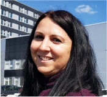
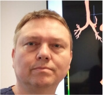
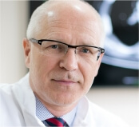
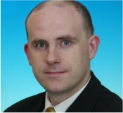
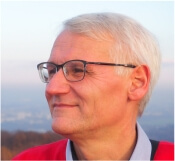

1st Warsaw International Workshop on
Lung Cancer Diagnostics WAWWLC
MAY 15th , 2019
On May 14-15 , 2019 1 Warsaw International Workshop on Lung Cancer Diagnostics took place.
The participants had the opportunity to get acquainted with current data on epidemiology, diagnosis and treatment of lung cancer. Our employees presented online procedures using modern diagnostic equipment. During the workshop, the focus was on the use of EBUS (conventional EBUS-TBNA and EUS), rigid bronchoscopy, combined therapeutic techniques and thoracoscopy.
International Bronchoscopy Team

K. Górska

P. Korczyński

R. Krenke

J. Pieróg

A. Szlubowski
I live demonstration
A. Szlubowski, P. Korczyński
EBUS and EUS in the diagnosis of lung cancer.
Introduction M. Mierzejewski
EBUS and EUS in the diagnosis of lung cancer.
Introduction M. Mierzejewski
II live demonstration
J. Pieróg, P. Korczyński
Cryobiopsy. Introduction M. Mierzejewski
Cryobiopsy. Introduction M. Mierzejewski
III live demonstration
P. Korczyński, K. Górska
EBUS-TBNA-19G biopsy in the diagnosis of enlarged mediastinal lymph nodes.
Introduction M. Mierzejewski
EBUS-TBNA-19G biopsy in the diagnosis of enlarged mediastinal lymph nodes.
Introduction M. Mierzejewski
IV live demonstration
R. Krenke, P. Korczyński
Medical thoracoscopy in diagnosis of pleural effusion.
Introduction M. Mierzejewski
Medical thoracoscopy in diagnosis of pleural effusion.
Introduction M. Mierzejewski